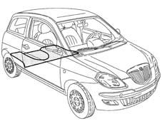
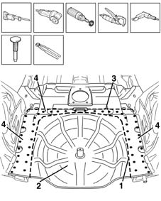
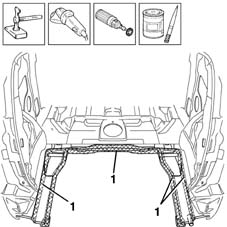
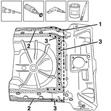
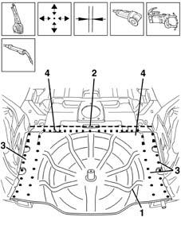
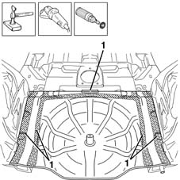
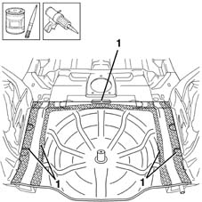

7210B56 R.R. BOOT/LOAD CARRYING COMPARTMENT FLOOR (partial rear operation)
- Path
- Procedures > 72 PANELS AND FRAME > 7210 REMOVING REFITTING > 7210B structure elements-central and rear part > 7210B56 R.R. BOOT/LOAD CARRYING COMPARTMENT FLOOR (partial rear operation)
- Kind
- repair procedure (removal / refitting; the operation number is the code)
- Applies to
- all engines; all production periods
- Interactive page
- https://sloeber94.github.io/elrnDB-lYpsln/en/#/2429726
Applies to: all engines; all production periods
 Removing
Removing
 Refitting
Refitting7210B70 R.R. REAR TRIM (structural element)
Check if any of the connected parts are deformed by checking body alignment dimensions. Use appropriate measurement tools (reference rigs, templates or gauges).
Straighten the body if necessary.

Applies to: all engines; all production periods
1. Use a hacksawing machine to follow the cutting lines shown in the figure.
2. Remove the floor.
3. Use a circular saw to cut along the lines shown in the figure.
Use a rotary brush to remove paint to gain access to the weld spots.
4. Use a chamfering machine to remove the weld spots shown in the figure.
Drill out any weld spots not accessible to the chamfering machine.
Use a chisel and mallet to remove spots drilled previously.
Trim the cut edges from the car.

Applies to: all engines; all production periods
Straighten the car edges using a mallet and profiled stake.
Use a grinding wheel to remove the spot weld residues.
Use a rotary brush to clean treated areas.
1. Apply the electroweldable paint finish.

Applies to: all engines; all production periods
1. Take the measurements accurately and cut the replacement part keeping a section of panel for the overlap.
2. Use a grinding wheel to remove the corrosion-proofing from around the inner and outer edge of the parts.
3. Drill out the holes indicated.
Apply electric weld paint finish to the edges to be welded.

Applies to: all engines; all production periods
Refitting
Removing1. Position the floor correctly in the vehicle fitting it via the passenger compartment and fasten it using self-locking clamps.
Check the alignment and ensure the surrounding gaps are even.
2. Use a circular saw to trim the panel along the join line to remove any excess parts.
3. Use a spot welder to weld the areas shown in the figure.
4. Use a MIG welder to fill the holes made previously.

Applies to: all engines; all production periods
Correct any deformations in the panel using a profiled stake and mallet.
1. Use a grinding wheel to level the welds
Use a rotary brush to clean the newly-welded areas.

Applies to: all engines; all production periods
1. Apply rust-proofing to newly-welded areas.
Seal the joint lines between the part and the car.

Applies to: all engines; all production periods